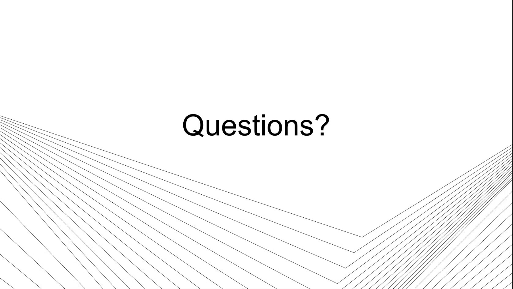
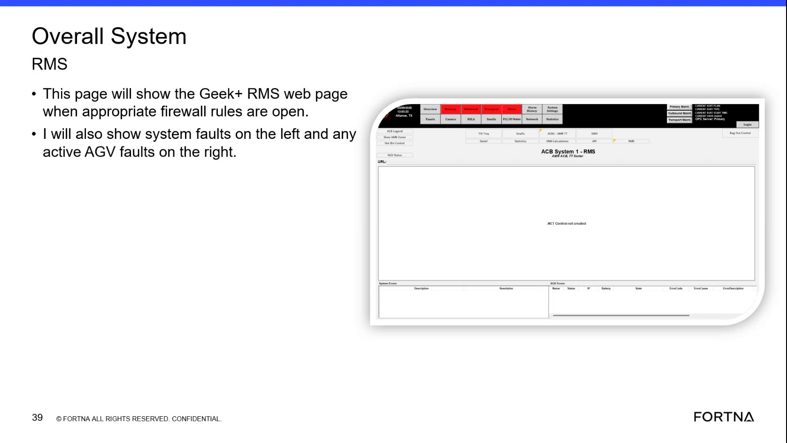

| Procedure ID | proc_capture_observations_for_later_diagnosis_while_working_to_restore_operation_v1 |
|---|---|
| Title | Capture Observations for Later Diagnosis While Working to Restore Operation |
| Procedure Type | reference |
| Primary Role | L1_support |
| Support Safe | Yes |
| Validation Status | needs_sme_review |
| Merge Status | source_finalized |
Document operator-reported actions, reported Aviva status, and observed backend system state during an incident so later diagnosis is possible while immediate support remains focused on restoring operation.
Use during a live support incident when immediate restoration is the priority and support needs to capture enough observations to enable later diagnosis, especially when Aviva-reported actions or statuses need to be compared against RMS, WCS, or OptiSweep state.
Responsible role: L1_support
Instruction:
Ask the operator what they pressed or sent from Aviva, if applicable, and record that action in the incident notes. If support does not have direct Aviva access, explicitly note that the action record is based on operator report.
Expected result:
The incident record contains the operator-reported Aviva action or command attempt.
Screens / Images:

Stop or Escalate If:
Responsible role: L1_support
Instruction:
Ask the operator what status they see in Aviva and record that reported status in the incident notes. If support cannot directly view Aviva, note that the status is operator-reported.
Expected result:
The incident record contains the operator-reported Aviva status.
Screens / Images:
Stop or Escalate If:
Responsible role: L1_support
Instruction:
Check the available backend system views and record the state observed in RMS, WCS, OptiSweep, or the RMS screen, including whether the expected state change is present. Where applicable, begin with the RMS screen to see whether any system faults are present.
Expected result:
The incident record contains observed backend state and any visible system fault information.
Screens / Images:

Stop or Escalate If:
Responsible role: L1_support
Instruction:
Compare the operator-reported Aviva action or status against the observed state in WCS, OptiSweep, or RMS, and note any mismatch between them.
Expected result:
The incident record clearly identifies whether the reported Aviva state matches or does not match backend system state.
Screens / Images:
Stop or Escalate If:
Responsible role: L1_support
Instruction:
Document the captured actions, statuses, observed system state, and mismatches in enough detail that the issue can be reviewed later. Do not claim a complete root-cause diagnosis during the live incident if the source evidence does not support it.
Expected result:
A usable incident record exists for later diagnosis while live support remains focused on restoring operation.
Screens / Images:
Stop or Escalate If: